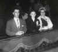
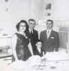

RECEPTION FOR THE FIRST COMMUNION OF GILLES DAOUST
Gilles Daoust made his First Communion in the spring of 1962 in St-Jean-Baptiste-de-Lasalle parish, in the Maisonneuve district of Montréal. His family lived on the ground floor diagonally across from 2179 Létourneux, the home of Ézilda Côté-Consigny, Gilles's maternal grandmother. The reception after the church ceremony was held at his grandmother Ézilda's.
Click on the thumbnails below to see the photos better.